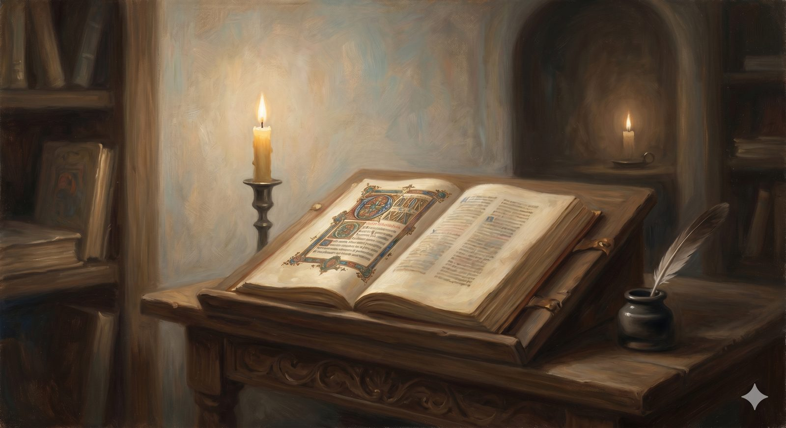

The Long Middle
The long middle of the records — a millennium of preserved learning and real saints, the honest wounds of crusade and inquisition, the pre-Reformers, and the road to reform.
"The grass withers, the flower fades, but the word of our God will stand forever." Isaiah 40:8 (ESV)
The second shelf covers the longest stretch of all — the thousand years between the fall of Rome and the dawn of the Reformation. It is the shelf pilgrims are most tempted to skip, taught to imagine it as merely "the Dark Ages," a dreary gap of superstition between the glories of Rome and the light of the Renaissance. The reality is more interesting and more complicated, and the records here tell of a light that was kept burning through a long dim age — and of wounds that must not be glossed over.
c. 500–1500The light kept burning
After Rome fell in 476 AD, the church became the chief bearer of civilization in the West. It was monks in Ireland and Britain who, huddled over their manuscripts in beehive huts on Atlantic cliff-edges, painstakingly copied and preserved the classical texts that would otherwise have been lost forever — so that the intellectual heritage of Greece and Rome survives today largely because of them. In this period the church was not the enemy of learning but, very often, its sole patron.
And it produced genuine lights. Bernard of Clairvaux, the most influential churchman of the twelfth century, was deeply Christ-centered in a way unusual for his era; his devotional writings — including the hymn "O Sacred Head, Now Wounded" — sit comfortably on a Reformed bookshelf to this day. Anselm of Canterbury gave the Western church its most precise early account of the atonement as the satisfaction of divine justice, the conceptual foundation on which the later doctrine of penal substitution would be built. And Thomas Aquinas — vast, patient, and so large that a semicircle reportedly had to be cut from his dining table — undertook in his Summa one of the most ambitious intellectual projects in history, integrating Aristotle with Christian theology. The Reformers would push back hard against parts of it, especially on grace and merit, but they were working in categories he helped define.
In plain terms
The "Dark Ages" weren't nearly as dark as the nickname suggests. Through a chaotic millennium the church preserved learning, produced real saints and thinkers, and laid groundwork the Reformers later built on — even where they disagreed with it.
A heavy record on the shelfThe crusades, the inquisition, and a church that forgot what it was
But the same shelf holds genuine spiritual decay, and an honest archive sits with it rather than explaining it away. The medieval centuries saw the corruption of the papacy, the abuse of indulgences, the entanglement of church and political power, and a widening gulf between the Latin church and ordinary people who could neither read nor understand the Mass. Two wounds in particular cannot be softened.
The Crusades began with a genuine religious impulse — to reclaim the Holy Land and protect Christian pilgrims — and tens of thousands responded with what they understood as devotion. What followed mixed extraordinary courage with extraordinary atrocity: the sack of Jerusalem in 1099, in which the crusaders massacred the city's Muslim and Jewish inhabitants, was recorded with horror even by some contemporaries; the Fourth Crusade ended with crusaders sacking Constantinople itself, the capital of Eastern Christendom, widening a schism that has never fully healed. The church preached these campaigns in Christ's name. That fact cannot be softened.
The Inquisition, in its various forms, was Augustine's logic of compulsion taken to its worst conclusion: torture to extract confessions, heretics burned, the Spanish Inquisition operating with particular severity against Jewish and Muslim converts suspected of secretly keeping their old faith. These are not ancient embarrassments to be explained away. They are the fruit of what happens when the church forgets that it has no coercive mandate — that Jesus said his kingdom is not of this world, that Paul wrote with ink and not iron, and that faith wielded by the sword is not faith but its counterfeit. Every generation needs to remember what the church became when it grasped the state's power to compel, and to ask honestly whether something of that same tendency lives in us.
Jesus said his kingdom is not of this world; Paul wrote with ink, not iron. Faith wielded by the sword is not faith but its counterfeit.
The morning starsWycliffe and Hus, before the dawn
The Reformation did not arrive from nowhere. More than a century before Luther, John Wycliffe — an Oxford scholar — argued that Scripture alone, not pope or council, was the supreme authority for Christians, and produced the first complete English Bible; his followers were persecuted, and his bones were later dug up and burned. Jan Hus took up the same ideas in Bohemia, was promised safe conduct to a council to defend them, and was burned at the stake anyway, reportedly dying in song. His last words, by tradition: you are roasting a goose now — for "Hus" meant goose — but in a hundred years you will hear a swan singing, whom you will not be able to silence. One hundred years later, almost to the year, came Martin Luther. The Reformers knew they were not inventing something new; they were recovering something old.
c. 1300–1517The road to reformation
The final volumes on this shelf explain how the ground was prepared. The Renaissance looks at first like a story of painting and patronage, not church history — but it prepared the way for reform in ways hard to overstate. Its humanist scholars did not set out to reform the church; what they did was recover the tools for doing so. The movement to return ad fontes — "to the sources" — produced scholars who could read the New Testament in Greek rather than through the centuries-thick lens of the Latin Vulgate, and when they read it in Greek, things looked different. Erasmus of Rotterdam, the greatest humanist of his age, produced a critical edition of the Greek New Testament in 1516. He intended better scholarship, not a revolution. He got both.
And then the printing press. Gutenberg's invention, around 1440, was the most consequential technology in Christian history since the codex replaced the scroll. Before the press, a Bible cost as much as a farm; after it, pamphlets could be produced in days and spread across Europe in weeks. When Luther posted his Ninety-Five Theses at Wittenberg in October 1517, they were reprinted across Germany within a month. The Reformation was, among other things, the first great media event of the modern age.
That is the long middle — a millennium of light kept burning and power badly abused, of real saints and real wounds, ending with the tools and the tinder all gathered. The next shelf holds the fire itself: the Reformation, when the gospel of grace was recovered with such force that the whole church was remade.